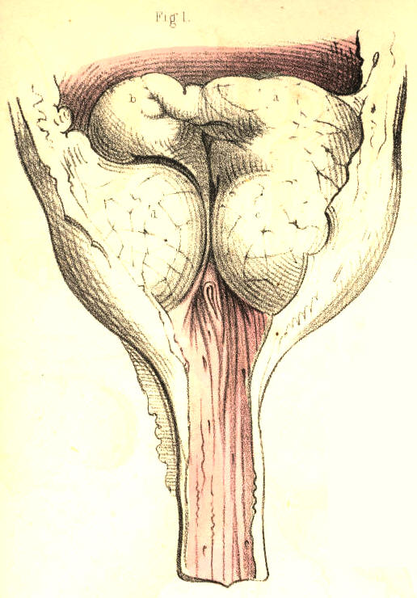

SURGICAL ANATOMY by JOSEPH MACLISE
COMMENTARY ON PLATES 61 & 62.
DEFORMITIES OF THE PROSTATE.--DISTORTIONS AND
OBSTRUCTIONS OF THE PROSTATIC URETHRA.
The prostate is liable to such frequent and varied deformities, the
consequence of diseased action, whilst, at the same time, its healthy
function (if it have any) in the male body is unknown, that it admits at
least of one interpretation which may, according to fact, be given of
it--namely, that of playing a principal part in effecting some of the
most distressing of "the thousand natural ills that flesh is heir to."
But heedless of such a singular explanation of a final cause, the
practical surgeon will readily confess the fitting application of the
interpretation, such as it is, and rest contented with the proximate
facts and proofs. As physiologists, however, it behooves us to look
further into nature, and search for the ultimate fact in her prime
moving law. The prostate is peculiar to the male body, the uterus to the
female. With the exception of these two organs there is not another
which appears in the one sex but has its analogue in the opposite sex;
and thus these two organs, the prostate and the uterus, appear by
exclusion of the rest to approach the test of comparison, by which their
analogy becomes as fully manifested as that between the two quantities,
a-b, and a+b the only difference which
exists depends upon the
subtraction or the addition of the quantity, b. The difference between a
prostate and a uterus is simply one of quantity, such as we see existing
between the male and the female breast. The prostate is to the uterus
absolutely what a rudimentary organ is to its fully developed analogue.
The one, as being superfluous, is in accordance with nature's law of
nihil supervacaneum nihil frutra,
arrested in its development, and in
such a character appears the prostate. This body is not a gland any more
than is the uterus, but both organs being quantitatively, and hence
functionally different, I here once more venture to call down an
interpretation of the part from the unfrequented bourne of comparative
anatomy, and turning it to lend an interest to the accompanying figures
even with a surgical bearing, I remark that the prostatic or rudimentary
uterus, like a germ not wholly blighted, is prone to an occasional
sprouting or increase beyond its prescribed dimensions--a hypertrophy in
barren imitation, as it were, of gestation. [Footnote]
[Footnote: This expression of the fact to which I allude will not, I
trust, be extended beyond the limits I assign to it. Though I have every
reason to believe, that between the prostate of the male and the uterus
of the female, the same amount of analogy exists, as between a coccygeal
ossicle and the complete vertebral form elsewhere situated in the spinal
series, I am as far from regarding the two former to be in all respects
structurally or functionally alike, as I am from entertaining the like
idea in respect to the two latter. But still I maintain that between a
prostate and a uterus, as between a coccygeal bone and a vertebra, the
only difference which exists is one of quantity, and that hence arises
the functional difference. A prostate is part of a uterus, just as a
coccygeal bone is part (the centrum) of a vertebra. That this is the
absolute signification of the prostate I firmly believe, and were this
the proper place, I could prove it in detail, by the infallible rule of
analogical reasoning. John Hunter has observed that the use of the
prostate was not sufficiently known to enable us to form a judgment of
the bad consequences of its diseased state. When the part becomes
morbidly enlarged, it acts as a mechanical impediment to the passage of
urine from the bladder, but from this circumstance we cannot reasonably
infer, that while of its normal healthy proportions, its special
function is to facilitate the egress of the urine, for the female
bladder, though wholly devoid of the prostate, performs its own function
perfectly. It appears to me, therefore, that the real question should
be, not what is the use of the prostate? but has it any proper function?
If the former question puzzled even the philosophy of Hunter, it was
because the latter question must be answered in the negative. The
prostate has no function proper to itself per se. It is a thing distinct
from the urinary apparatus, and distinct likewise from the generative
organs. It may be hypertrophied or atrophied, or changed in texture, or
wholly destroyed by abscess, and yet neither of the functions of these
two systems of organs will be impaired, if the part while diseased act
not as an obstruction to them. In texture the prostate is similar to an
unimpregnated uterus. In form it is, like the uterus, symmetrical. In
position it corresponds to the uterus. The prostate has no ducts proper
to itself. Those ducts which are said to belong to it (prostatic ducts)
are merely mucous cells, similar to those in other parts of the urethral
lining membrane. The seminal ducts evidently do not belong to it. The
texture of the prostate is not such as appears in glandular bodies
generally. In short, the facts which prove what it is not, prove what it
actually is--namely, a uterus arrested in its development, and as a sign
of that all-encompassing law in nature, which science expresses by the
term "unity in variety." This interpretation of the prostate, which I
believe to be true to nature, will last perhaps till such time as the
microscopists shall discover in its "secretion"
some species of
mannikins, such as may pair with those which they term spermatozoa.]
Fig. 1, Plate 61.--The prostate, a b,
is here represented thinned in its
walls above and below. The lower wall is dilated into a pouch caused by
the points of misdirected instruments in catheterism having been rashly
forced against it.

Plate 61.--Figure 1.
Fig. 2, Plate 61.--The prostate, a b,
is here seen to be somewhat more
enlarged than is natural. A tubercle, b,
surmounts the lower part, c,
of
the prostate, and blocks up the vesical orifice. Catheters introduced by
the urethra for retention of urine which existed in this case, have had
their points arrested at the bulb, and on being pushed forwards in this
direction, have dilated the bulb into the form of a pouch, seen at d.
The sinus of the bulb, being the lowest part of the urethral canal, is
very liable to be distorted or perforated by the points of instruments
descending upon it from above and before. [Footnote]
[Footnote: When a stricture exists immediately behind the bulb, this
circumstance will, of course, favour the occurrence of the accident.
"False passages (observes Mr. Benjamin Phillips) are less frequent here
(in the membranous part of the urethra) than in the bulbous portion of
the canal. The reason of this must be immediately evident: false
passages are ordinarily made in consequence of the difficulty
experienced in the endeavour to pass an instrument through the
strictured portion of the tube. Stricture is most frequently seated at
the point of junction between the bulbous and membranous portions of the
canal; consequently, the false passage will be usually anterior to this
latter point."--(On the Urethra, its Diseases. &c., p. 15.) ]

Plate 61.--Figure 2
Fig. 3, Plate 61.--A cyst, c,
is seen to grow from the left side of the
base of the prostate, a b,
and to form an obstruction at the vesical
orifice.
Plate 61.--Figure 3.
Fig. 4, Plate 61.--A globular excrescence, a, appears blocking up the
vesical orifice, and giving to this the appearance of a crescentic slit,
corresponding to the shape of the obstructing body. The prostate, b b,
is enlarged in both its lateral lobes. A small bougie, c, is placed in
the prostatic canal and vesical opening.
Plate 61.--Figure 4
Fig. 5, Plate 61.--The prostate, d,
is considerably enlarged, and the
vesical orifice is girt by a prominent ring, b b, from the right border
of which the nipple-shaped body, a,
projects and occupies the outlet.
Owing to the retention of urine caused by this state of the prostate,
the ureters, c c, have become
very much dilated.
Plate 61.--Figure 5.
Fig. 6, Plate 61.--The lateral lobes of the prostate, c c, are seen
enlarged, and from the inner side and base of each, irregularly shaped
masses, a, b, d, project, and
bend the prostatic urethra first to the
right side, then to the left. The part, a, resting upon the part, b,
acts like a valve against the vesical outlet, which would become closed
the tighter according to the degree of superincumbent pressure. A
flexible catheter would, in such a case as this, be more likely,
perhaps, to follow the sinuous course of the prostatic passage than a
rigid instrument of metal.
Plate 61.--Figure 6.
Fig. 7, Plate 61.--A globular mass, a,
of large size, occupies the neck
of the bladder, and gives the vesical orifice, c, a crescentic shape,
convex towards the right side. The two lobes of the prostate, b, are
much enlarged.
Plate 61.--Figure 7.
Fig. 8, Plate 61.--The lateral lobes, b
b, of the prostate are
irregularly enlarged, and the urinary passage is bent towards the right
side, c, from the membranous
portion, which is central. Surmounting the
vesical orifice, c, is seen
the tuberculated mass, a,
which being
moveable, can be forced against the vesical orifice and thus produce
complete retention of urine. In this case, also, a flexible catheter
would be more suitable than a metallic one.
Plate 61.--Figure 8.
Fig. 9, Plate 61.--The lateral lobes, b
b, of the prostate are enlarged.
The third lobe, a, projects
at the neck of the bladder, distorting the
vesical outlet. A small calculus occupies the prostatic urethra, and
being closely impacted in this part of the canal, would arrest the
progress of a catheter, and probably lead to the supposition that the
instrument grated against a stone in the interior of the bladder, in
which case it would be inferred that since the urine did not flow
through the catheter no retention existed.
Plate 61.--Figure 9.
Plate 61.--Figure 10.
Fig. 10, Plate 61.--Both lateral lobes, b c, of
the prostate appear much
increased in size. A large irregular shaped mass, a, grows from the base
of the right lobe, and distorts the prostatic canal and vesical orifice.
When the lobes of the prostate increase in size in this direction, the
prostatic canal becomes much more elongated than natural, and hence the
instrument which is to be passed for relieving the existing retention of
urine should have a wide and long curve to correspond with the form of
this part of the urethra. [Footnote]
[Footnote: Both lobes of the prostate are equally liable to chronic
enlargement. Home believed the left lobe to be oftener increased in size
than the right. Wilson (on the Male Urinary and Genital Organs) mentions
several instances of the enlargement of the right lobe. No reason can be
assigned why one lobe should be more prone to hypertrophy than the
other, even supposing it to be matter of fact, which it is not. But the
observations made by Cruveilhier (Anat. Pathol.), that the lobulated
projections of the prostate always take place internally at its vesical
aspect, is as true as the manner in which he accounts for the fact is
plausible. The dense fibrous envelope of the prostate is sufficient to
repress its irregular growth externally.]
Fig. 11, Plate 61.--Both lobes of the prostate are enlarged, and from
the base of each a mass projects prominently around the vesical orifice,
a b. The prostatic urethra has
been moulded to the shape of the
instrument, which was retained in it for a considerable time.
Plate 61.--Figure 11.
Fig. 12, Plate 61.--The prostate, c b,
is enlarged and dilated, like a
sac. Across the neck, a, of
the bladder the prostate projects in an
arched form, and is transfixed by the instrument, d. The prostate may
assume this appearance, as well from instruments having been forced
against it, as from an abscess cavity formed in its substance having
received, from time to time, a certain amount of the urine, and retained
this fluid under the pressure of strong efforts, made to void the
bladder while the vesical orifice was closed above.
Plate 61.--Figure 12.
Fig. 13, Plate 61.--The lateral lobes, d e, of the prostate are
enlarged; and, occupying the position of the third lobe, appear as three
masses, a b c, plicated upon
each other, and directed towards the
vesical orifice, which they close like valves. The prostatic urethra
branches upwards into three canals, formed by the relative position of
the parts, e, c, b, a, d, at
the neck of the bladder. The ureters are
dilated, in consequence of the regurgitation of the contents of the
bladder during the retention which existed ..
Plate 61.--Figure 13.
Fig. 1, Plate 62, exhibits the lobes of the prostate greatly increased
in size. The part, a b, girds
irregularly, and obstructs the vesical
outlet, while the lateral lobes, c d,
encroach upon the space of the
prostatic canal. The walls of the bladder are much thickened.

Plate 62.--Figure 1.
Fig. 2, Plate 62.--The three lobes, a,
d, c, of the prostate are
enlarged and of equal size, moulded against each other in such a way
that the prostatic canal and vesical orifice appear as mere clefts
between them. The three lobes are encrusted on their vesical surfaces
with a thick calcareous deposit. The surface of the third lobe, a, which
has been half denuded of the calcareous crust, b, in order to show its
real character, appeared at first to be a stone impacted in the neck of
the bladder, and of such a nature it certainly would seem to the touch,
on striking it with the point of a sound or other instrument.

Plate 62.--Figure 2.
Fig. 3, Plate 62, represents the prostate with
its three lobes enlarged,
and the prostatic canal and vesical orifice narrowed. The walls of the
bladder are thickened, fasciculated, and sacculated; the two former
appearances being caused by a hypertrophy of the vesical fibres, while
the latter is in general owing to a protrusion of the mucous membrane
between the fasciculi.
Plate 62.--Figure 3.
Fig. 4, Plate 62.--The prostate presents four
lobes, a, b, c, d, each
being of large size, and projecting far into the interior of the
bladder, from around the vesical orifice which they obstruct. The
bladder is thickened, and the prostatic canal is elongated. The urethra
and the lobes of the prostate have been perforated by instruments,
passed for the retention of urine which existed. A stricturing band, e,
is seen to cross the membranous part of the canal.
Plate 62.--Figure 4.
Fig. 5, Plate 62.--The prostate, a a,
is greatly enlarged, and projects
high in the bladder, the walls of the latter, b b, being very much
thickened. The ureters, c,
are dilated, and perforations made by
instruments are seen in the prostate. The prostatic canal being directed
almost vertically, and the neck of the bladder being raised nearly as
high as the upper border of the pubic symphysis, it must appear that if
a stone rest in the bas fond of the bladder, a sound or staff cannot
reach the stone, unless by perforating the prostate; and if, while the
staff occupies this position, lithotomy be performed, the incisions will
not be required to be made of a greater depth than if the prostate were
of its ordinary proportions. On the contrary, if the staff happen to
have surmounted the prostate, the incision, in order to divide the whole
vertical thickness of this body, will require to be made very deeply
from the perinaeal surface, and this circumstance occasions what is
termed a "deep perinaeum."
Plate 62.--Figure 5.
Fig. 6, Plate 62.--The lower half, c,
b, f, of the prostate, having
become the seat of abscess, appears hollowed out in the form of a sac.
This sac is separated from the bladder by a horizontal septum, e e, the
proper base of the bladder, g g.
The prostatic urethra, between a e,
has
become vertical in respect to the membranous part of the canal, in
consequence of the upward pressure of the abscess. The sac opens into
the urethra, near the apex of the prostate, at the point c; and a
catheter passed along the urethra has entered the orifice of the sac,
the interior of which the instrument traverses, and the posterior wall
of which it perforates. The bladder contains a large calculus, i. The
bladder and sac do not communicate, but the urethra is a canal common to
both. In a case of this sort it becomes evident that, although symptoms
may strongly indicate either a retention of urine, or the presence of a
stone in the bladder, any instrument taking the position and direction
of d d, cannot relieve the
one or detect the other; and such is the
direction in which the instrument must of necessity pass, while the sac
presents its orifice more in a line with the membranous part of the
urethra than the neck of the bladder is. The sac will intervene between
the rectum and the bladder; and on examination of the parts through the
bowel, an instrument in the sac will readily be mistaken for being in
the bladder, while neither a calculus in the bladder, nor this organ in
a state of even extreme distention, can be detected by the touch any
more than by the sound or catheter. If, while performing lithotomy in
such a state of the parts, the staff occupy the situation of d d d, then
the knife, following the staff, will open, not the bladder which
contains the stone, but the sac, which, moreover, if it happen to be
filled with urine regurgigated from the urethra, will render the
deception more complete.
Plate 62.--Figure 6.
Fig. 7, Plate 62.--The walls, a a,
of the bladder, appear greatly
thickened, and the ureters, b,
dilated. The sides, c c c, of
the
prostate are thinned; and in the prostatic canal are two calculi, d d,
closely impacted. In such a state of the parts it would be impossible to
pass a catheter into the bladder for the relief of a retention of urine,
or to introduce a staff as a guide to the knife in lithotomy. If,
however, the staff can be passed as far as the situation of the stone,
the parts may be held with a sufficient degree of steadiness to enable
the operator to incise the prostate upon the stone.
Plate 62.--Figure 7.
COMMENTARY ON PLATES 63
& 64